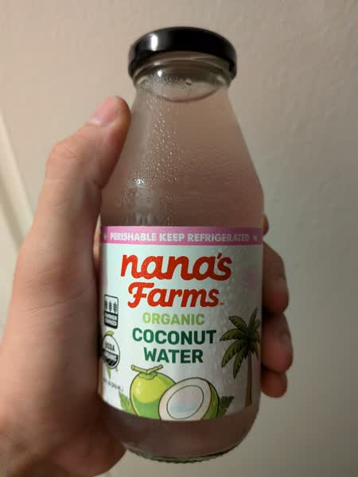

October 2026 · 10 fl oz (296 mL) · Still · Thailand · Unpasteurized · No Added Sugar · USDA Organic
Ranked 2nd of 42 coconut waters I have scored · below Harmless Harvest Original (8.1) · above Kirkland Organic (7.9). See the full ranking.
This is a 'farmer owned' unpasteurized nam hom water. It's organic, and while it's not officially fair trade it seems like a pretty damn transparent supply chain. Comes in a glass bottle as well.
Phenomenal deep flavor profile. It's not as green or fresh tasting as some options but it more than makes up for it in fruity depth. It's on the slightly sweeter side and the taste really matches the pink color. I would seriously recommend this- it goes toe to toe with any of the major players.
These coconuts are grown in habitats threatened by palm oil deforestation. If you find this site useful, consider donating to the Rainforest Action Network.